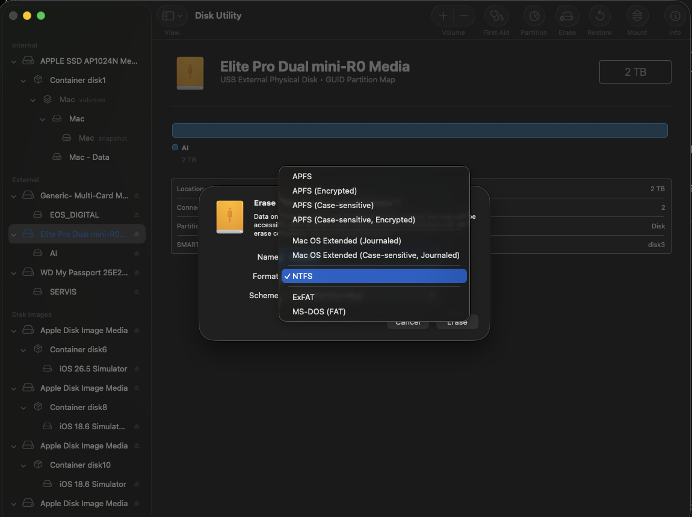
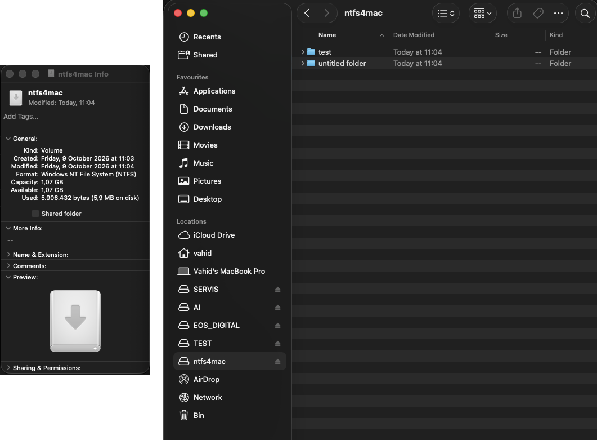
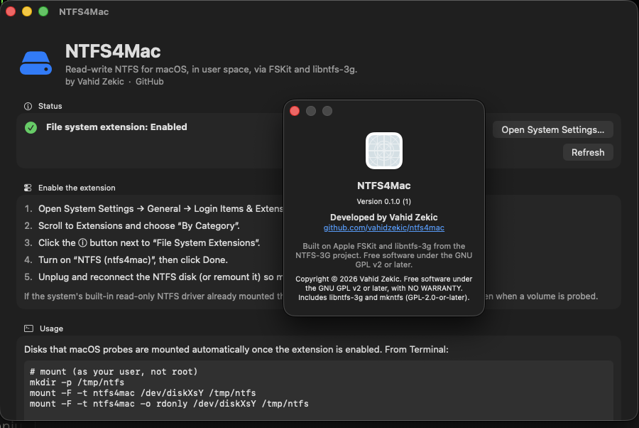

Why NTFS4Mac?
Read & write NTFS
Copy, edit, rename and delete files on Windows-formatted drives straight from Finder.
NTFS in Disk Utility
Erase › Format › NTFS – or diskutil eraseDisk NTFS4Mac from Terminal.
No kernel extension
Runs in user space on Apple's FSKit. No macFUSE, no reduced security, no Recovery-mode changes.
Apple Silicon & Intel
One universal, signed and notarized installer for M1, M2, M3, M4 and Intel Macs.
Proven NTFS engine
Uses libntfs-3g, the NTFS implementation trusted on Linux for over 15 years.
Free & open source
GPL-licensed. A free alternative to paid NTFS drivers for Mac.
Screenshots



Install
- Download the latest
NTFS4Mac-…pkgfrom GitHub Releases and open it. - Open System Settings › General › Login Items & Extensions, choose By Category, click ⓘ next to File System Extensions and turn on NTFS (ntfs4mac).
- Connect an NTFS drive, or format one as NTFS in Disk Utility.
Back up important data before writing to NTFS. Shut Windows down fully (disable Fast Startup) before moving a drive to the Mac.
FAQ
Can a Mac write to NTFS drives?
macOS only reads NTFS out of the box. NTFS4Mac adds full read-write support and NTFS formatting through Apple's FSKit.
Does it work on Apple Silicon (M1/M2/M3/M4)?
Yes. The installer is universal. Read-write mounting needs macOS 26 or later; on macOS 15 drives can be formatted but mount read-only due to a macOS bug.
Do I need macFUSE or a kernel extension?
No. NTFS4Mac is an FSKit file-system extension that runs in user space.
Is it free?
Yes – free and open source under the GNU GPL v2 or later.
How do I uninstall it?
Run scripts/uninstall.sh from the repository, or delete /Applications/NTFS4Mac.app and /Library/Filesystems/ntfs4mac.fs.